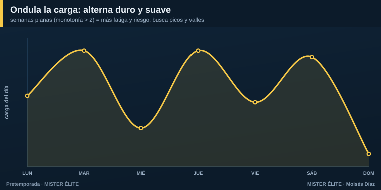
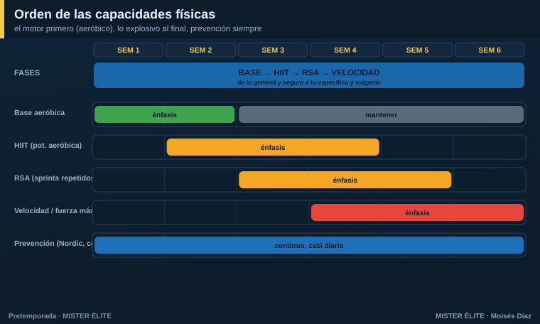
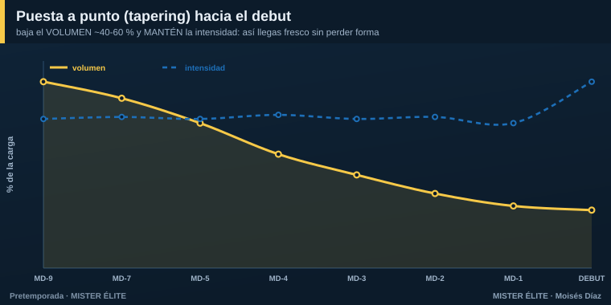

Módulo 03 · Cómo meter las cargas (el módulo central)
Ya sabes qué es la carga y cómo medirla. Ahora lo importante: cómo se mete, día a día, dentro de la semana. Este módulo es el corazón del curso.
Regla nº 1: una orientación dominante por sesión
El error más común del entrenador amateur es meter todo en cada sesión: fuerza, resistencia, velocidad y táctica, todo al máximo, todos los días. Resultado: el equipo se satura, acumula fatiga y no supercompensa ninguna capacidad.
La regla: cada sesión tiene una orientación dominante. Lo demás, en dosis de mantenimiento. Y entre dos estímulos máximos de la misma capacidad, 48 horas.
Ondula la carga: alterna duro y suave
Una semana donde todos los días pesan lo mismo (monotonía alta) fatiga sin construir. La carga tiene que ondular: picos y valles.

El patrón sano de una semana es una onda: día medio → día alto → día bajo → día alto → día medio → partido → descanso. Nunca dos días altos de la misma capacidad seguidos. El descanso no es "tiempo perdido": es cuando ocurre la supercompensación.
Mete el físico DENTRO del balón
La pieza que lo cambia todo, sobre todo si tienes pocas sesiones: el acondicionamiento con balón. Los juegos reducidos (SSG) desarrollan a la vez fisiología + técnica + táctica en el mismo tiempo. Manipulando tres mandos decides qué efecto físico produces:
| Si quieres… | Haz esto en el juego reducido |
|---|---|
| Más aeróbico / volumen (base) | + espacio y + jugadores (8v8, 9v9 en campo grande): mucha distancia, FC sostenida |
| Más intensidad / HIIT | − jugadores (3v3, 4v4) en espacio reducido: FC ≥ 90 %, muchas aceleraciones |
| Más sprints repetidos (RSA) | espacios abiertos con transiciones: obligan a correr a tope una y otra vez |
| Más táctico, menos físico | tarea analítica, sin oposición o con pausa amplia |
Esto es oro para la baja frecuencia: en lugar de "correr sin balón" media hora, metes el mismo estímulo aeróbico en un 9v9, y de paso entrenas el modelo de juego. Dos pájaros de un tiro.
El orden de las capacidades
No todo se entrena a la vez ni en cualquier orden. La secuencia segura va del motor a lo explosivo:

- Base aeróbica (semanas 1-2) — volumen, FC 75-85 %. Juegos de posición a gran formato, posesiones largas. Construye el motor.
- HIIT / potencia aeróbica (semanas 2-4) — FC ≥ 90 %, RPE 8. Juegos reducidos 3v3-4v4, intervalos. 2-3 veces/semana.
- RSA — sprints repetidos (semanas 3-5) — 6-10 sprints de 4-6 s, pausa 20-30 s. Juegos abiertos con transiciones.
- Velocidad / potencia / fuerza máxima (semanas 4-6) — sprints máximos 20-40 m con pausa completa, con el jugador fresco. Calidad, no cantidad.
La prevención (Nordic, core, isométricos) va en paralelo, casi a diario, en dosis cortas de 10-15 min.
Concurrente: el orden dentro de la sesión
Cuando en una misma sesión conviven fuerza/velocidad y resistencia, el orden importa (efecto interferencia):
La calidad primero, con el jugador fresco. Velocidad, potencia y fuerza explosiva → al inicio. Resistencia y volumen táctico → después. Nunca sprints máximos tras 60 minutos de juego.
Si puedes separar (mañana y tarde, o con 6 h de margen), mejor: fuerza por la mañana, balón por la tarde. Eso es justo lo que permite el plan de dobles sesiones.
El microciclo tipo: cómo se ve una semana
Juntando todo lo anterior, una semana de pretemporada de frecuencia media (5-6 sesiones) tiene esta lógica:
- Lunes — reactivación + fuerza/prevención (carga baja). Se recupera del finde y se "enciende el motor".
- Martes — pico 1: resistencia/HIIT con balón (carga alta).
- Miércoles — descarga o descanso (separa los picos, da las 48 h).
- Jueves — pico 2: fuerza-potencia + táctico intenso (carga alta).
- Viernes — táctico fino + activación (carga baja). Empieza la descarga hacia el partido.
- Sábado — amistoso (carga de partido).
- Domingo — descanso.
Dos picos, separados, flanqueados por descargas. Esa forma se repite semana a semana (lo que cambia son los contenidos y el énfasis de cada fase). En la sección de Planes verás esta lógica adaptada a cada frecuencia.
El tapering: llegar fresco al debut
La última semana no es para seguir cargando. Es para disipar la fatiga manteniendo la forma:

Baja el VOLUMEN un 40 a 60 %. MANTÉN la intensidad.
- Reduce minutos y series, no la intensidad: conserva tareas cortas de alta velocidad y algún sprint máximo. Lo que mantiene las adaptaciones es la intensidad, no el volumen.
- Mantén la frecuencia de sesiones (no pares del todo), solo acórtalas.
- Duración: 7-14 días en una pretemporada normal; un mini-taper de 4-7 días si es corta.
- El día previo (MD-1): sesión corta, activación, algo de velocidad, baja carga, foco táctico.
Si bajas también la intensidad, llegas descansado pero desentrenado (ACWR < 0,8). El taper bien hecho es la diferencia entre llegar "bien" y llegar enchufado.
Y cuando tengo pocas sesiones, ¿qué cambia?
Este es el corazón del curso, así que adelantamos el principio (los planes lo desarrollan):
A menos sesiones, NO se entrena "lo mismo pero más apretado". Se reordenan prioridades, se integra el físico dentro del balón y se externaliza lo que el grupo ya no alcanza (carrera de base, gimnasio) hacia el trabajo autónomo del jugador.
Lo que cambia al bajar de frecuencia: la densidad (cuánto contenido por sesión) y el grado de integración. Lo que nunca cambia: la progresión gradual, las 48 h entre picos y la necesidad de descargar antes del partido.
En una frase
Una orientación por sesión, ondula la carga, mete el físico dentro del balón, respeta el orden de capacidades y el tapering final. Cuando falten sesiones, prioriza e integra, no apretujes.
Siguiente módulo: qué táctica entrenar y en qué orden para construir tu identidad de juego.